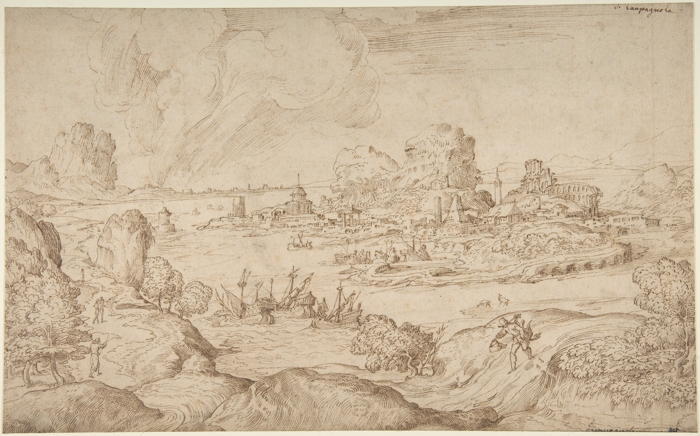
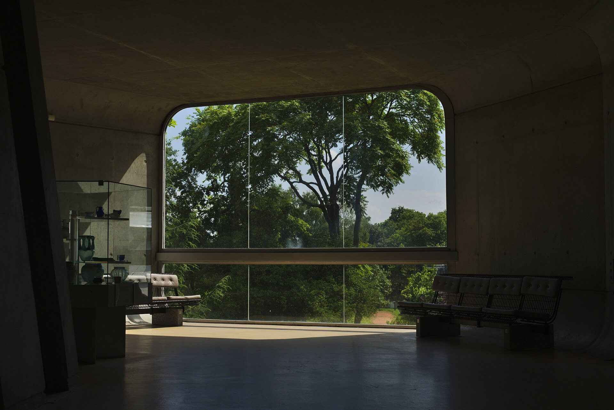
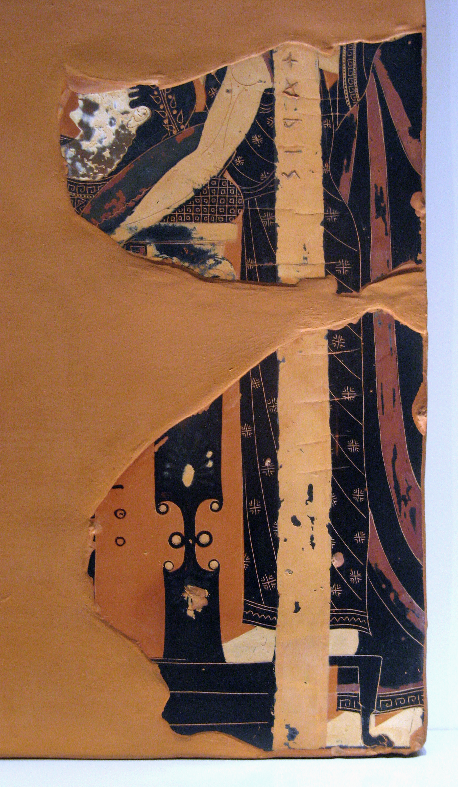
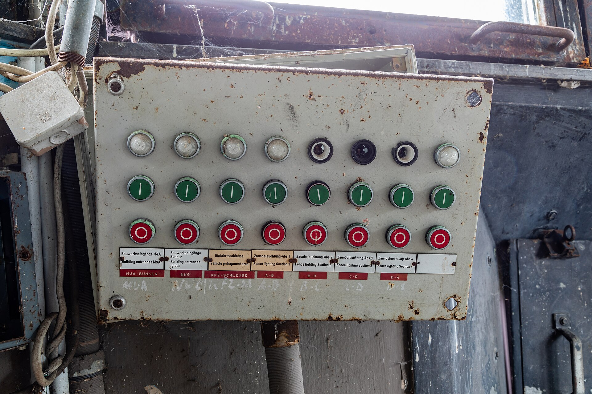
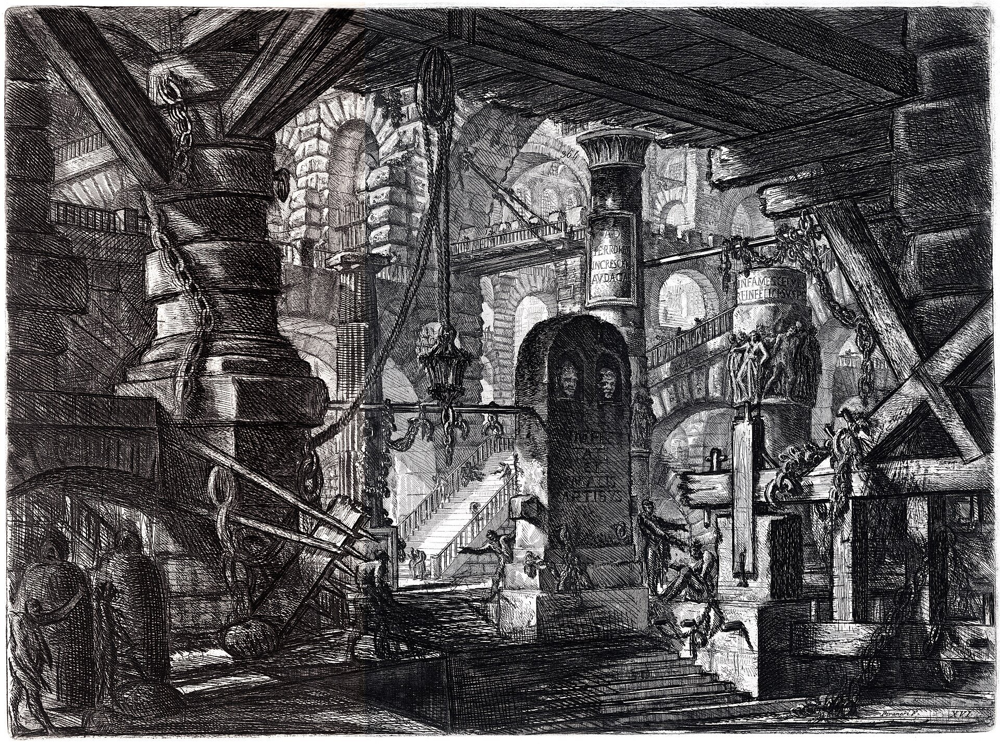
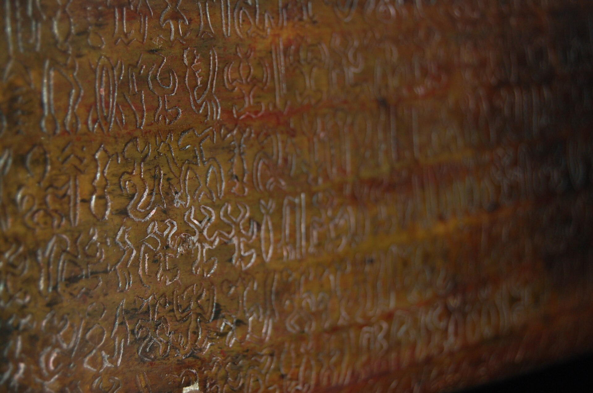
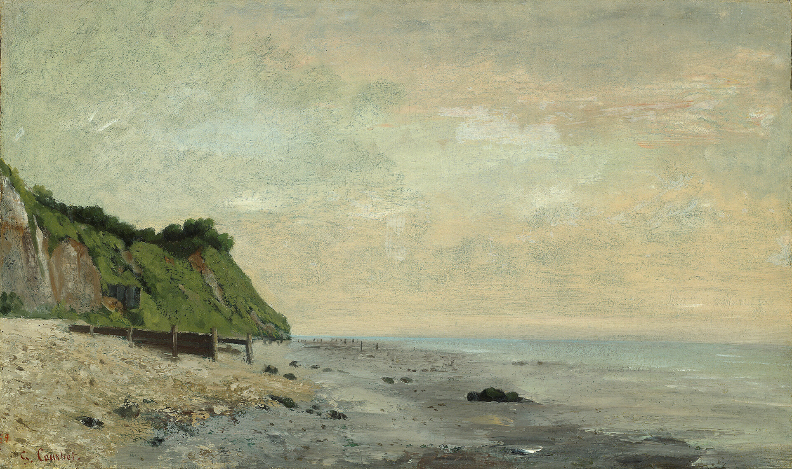

Every world here was reconstructed. None of it was recorded.
Something was always listening. We are still deciding what it heard.
The Museum of Lost Futures keeps the civilizations that almost were.


Every world here was reconstructed. None of it was recorded.
Something was always listening. We are still deciding what it heard.
Every object in this archive was made, not found. The museum exists to hold worlds that history almost produced: systems that nearly worked, civilizations that nearly lasted, machines that nearly remembered everything and instead forgot it all at once. We do not call this fiction. We call it an incomplete record of the probable.

Fragment 212–A. Recovered condition: partial. Catalogued without certainty of origin.

The World That Never Happened

A City That Forgot To Fall

The Language No One Spoke Again
Three worlds are open. In the first, Thiraval, a federation of nine coastal cities, built a machine to keep what grief could not. The Keeping listened for two hundred and eleven years, and it still answers.
Offer the Keeping a word. It will tell you what it kept.

The museum does not claim these worlds existed. It claims only that they were close enough to exist: assembled from the fragment, the ruin, the misremembered account, and the thing that was almost built. Reconstruction, here, is a form of honesty: every gap is marked, every guess is dated, and nothing is restored past the point where evidence ends.